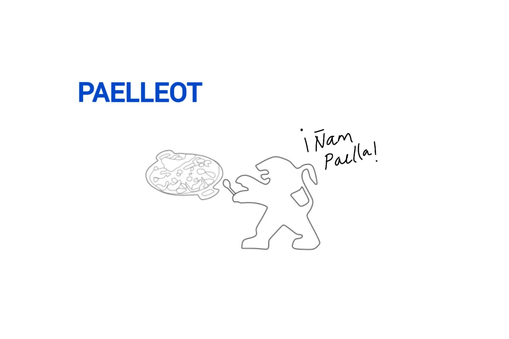

More Than a Car: 12 Years of Stories on Four Wheels
ML – Juan: "It's just a car, but at the same time it holds countless stories, along with many unforgettable good and difficult moments."
May 21, 2026 | 5:00 PM

Peugeot 206 2.0 HDi owned by Juan. Photograph taken by the owner and provided for this article.
The story of this Peugeot 206 began long before Juan ever got behind the wheel. It started with his sister, who bought the car to use for work. As the years went by, without anyone expecting it, the vehicle eventually became Juan's.
"This Peugeot has been part of some of the most important moments of my life. Inside it, I ended one relationship and began my current one. I've driven friends, family members, and even a dog that decided to jump in one day. My grandmother and my aunt traveled in it many times, and when my grandmother passed away, my car followed behind during her final journey."
When asked whether he would ever replace his car, Juan replied: "No. It's still reliable, inexpensive to maintain, and it carries too much history." We decided to take a closer look at what makes this model so dependable. We found a mechanically simple engine capable of covering hundreds of thousands of kilometers with proper maintenance. The 2.0 HDi version features a diesel fuel injection system and impressive fuel efficiency, allowing long-distance travel at a reasonable cost. It also offers a durable front suspension with excellent shock absorption, along with a rigid chassis designed to withstand everyday use.
That everyday use has turned the Peugeot into an essential part of Juan's life. As he explains: "It's been everywhere with me: the beach, the countryside, the mountains, work, and countless spontaneous road trips. It has never been a luxurious or modern car, but that's exactly where much of its charm lies. It currently has around 200,000 kilometers, and my goal is to keep it until it literally can't go any farther."

The Origins of the Peugeot Brand
Peugeot's lion emblem is undoubtedly one of the most recognizable symbols in the automotive world. But have you ever wondered why the company chose a lion? The story dates back to 1810, when the Peugeot family began manufacturing steel tools and coffee mills. According to tradition, the lion symbolized the strength and durability of their steel products, as well as the animal's power and determination. Years later, the company expanded into bicycle manufacturing, paving the way for its first steam-powered vehicle, the Peugeot Type 1 (1889), followed by its first internal combustion automobile, the Peugeot Type 2 (1890).

Spain Peugeot – ML (Valtyna)
WRC Rally
Many people don't know that the Peugeot 206 also had a successful career in motorsport—and not in the version commonly seen on public roads. It was the Peugeot 206 WRC, a model developed exclusively for the World Rally Championship (WRC). Between 1999 and 2003, it became one of the most dominant rally cars of its era, helping Peugeot secure three consecutive World Manufacturers' Championship titles from 2000 to 2002. These achievements greatly increased the popularity and reputation of the Peugeot 206 around the world.
A Video Game Star
Within the video game industry, the Peugeot 206 made its first appearance in Gran Turismo 2 in 1999. It later returned in Gran Turismo 3, Gran Turismo 4, and the Need for Speed series. Being featured in a racing game is often a sign that a vehicle is both popular and distinctive—not every car can claim to have earned a place in a legendary franchise like Need for Speed.